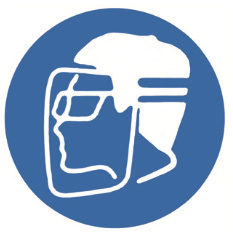

Alama za lazima au amri
Hizi ni alama zinazotoa maelekezo ya kufanya jambo katika eneo husika. Alama hizi zinapatikana maeneo mbalimbali kama vile maeneo ya kuhifadhia kemikali. Alama hizi zina rangi ya bluu. Umbo la alama hizi ni duara, picha nyeupe kwenye msingi wa bluu. Kielelezo namba 16 kinaonesha/kinabainisha mifano ya alama za lazima au amri.
Vaa barakoa
Vaa nguo zenye rangi ya kuonekana kwa urahisi

Sehemu ya kuoshea mikono

Kujikinga macho na uso
Kielelezo namba 16: Mifano ya alama za lazima au amri
Kazi ya kufanya namba 12
Bainisha maeneo muhimu katika mazingira ya shule yanayohitaji kuwekewa alama za usalama. Kisha, katika vikundi andaa alama hizo na mziweke katika maeneo husika.